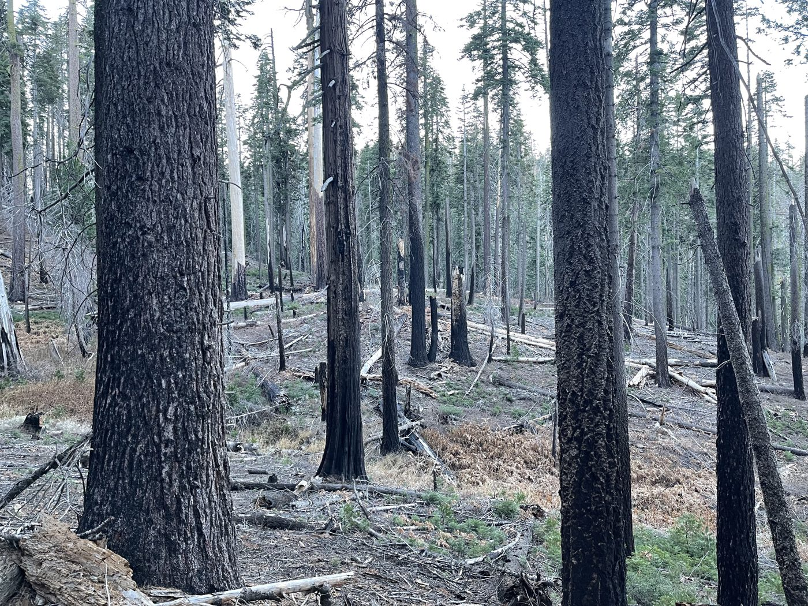
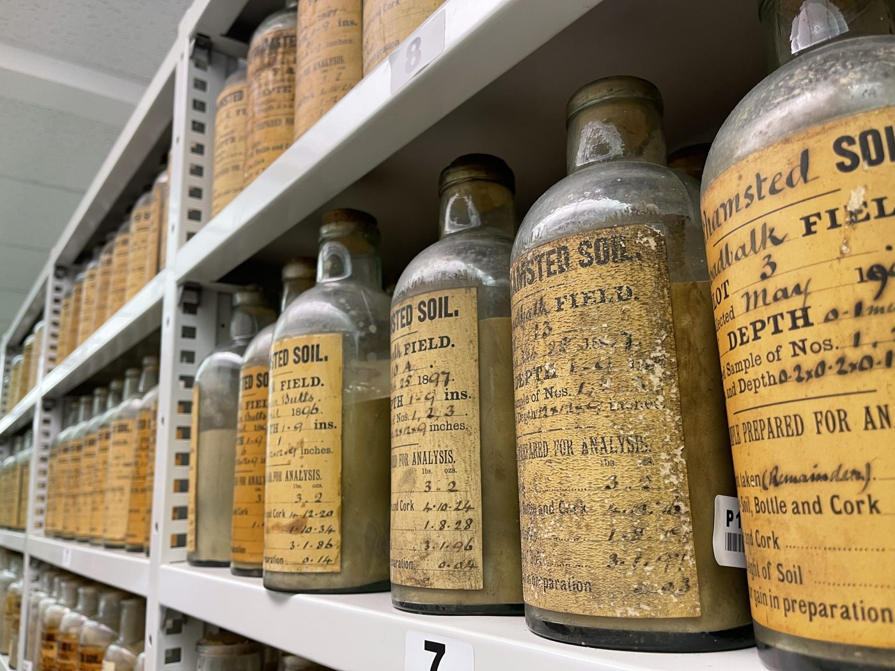
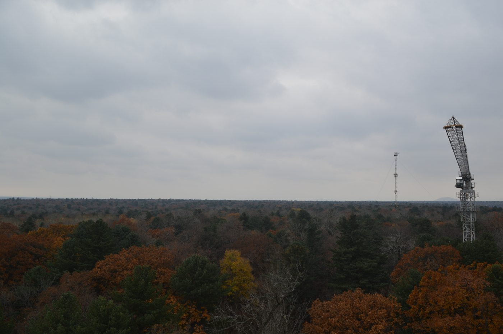
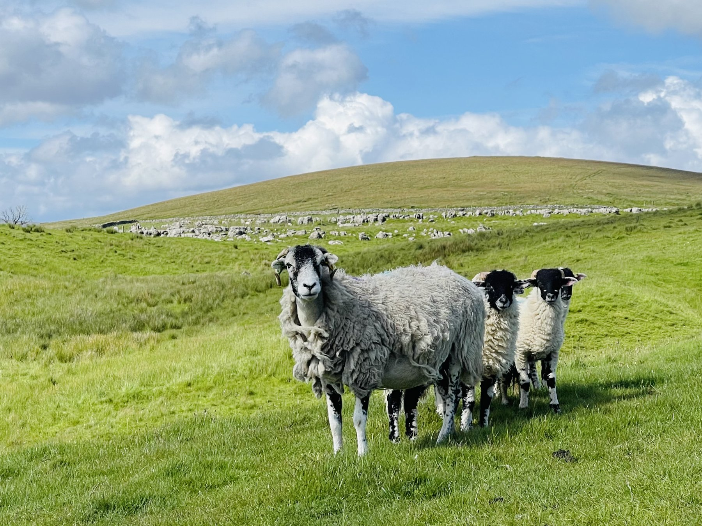
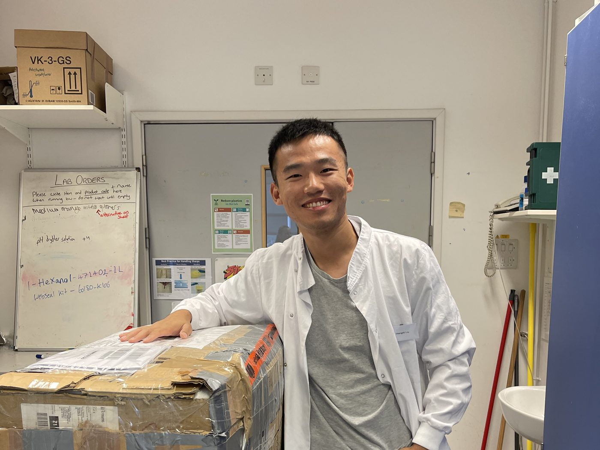
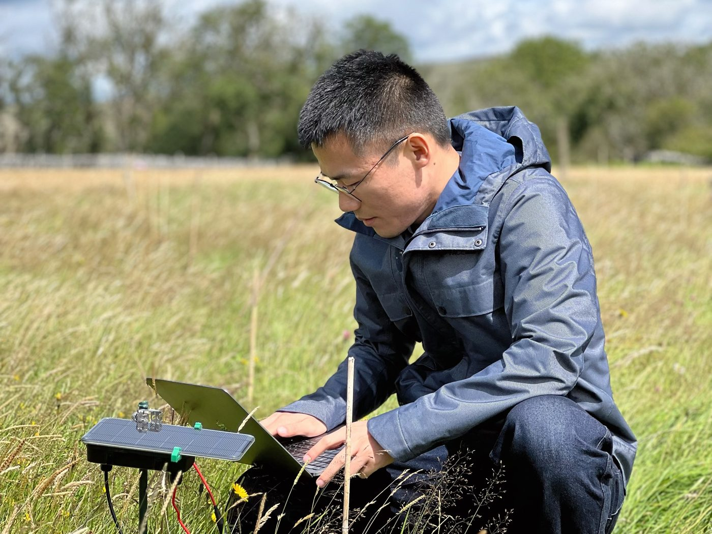

Research
My research asks how much carbon soils hold, how long it stays there, and how plants, soil organisms and land management change the answer. It spans fundamental questions about how soils and ecosystems work and applied questions about what to do, from experimental plots to national surveys and global syntheses, in grasslands, forests and farmland.
Fundamental questions
These questions are about mechanisms: how plants, mycorrhizal fungi and soil life shape the storage and persistence of carbon, and what lets some ecosystems keep functioning under stress while others are more vulnerable.

Plant diversity, soil life and climate extremes
Plant and soil biodiversity influence how soils store carbon and how well they cope with disturbance. I ask how diversity at different trophic levels, from plants to microbes and protists, relates to soil carbon and soil functioning when conditions turn extreme.
Work I have contributed to shows that plant diversity increases microbial resistance to drought and soil carbon accumulation, that changes in diversity and network complexity across trophic levels drive soil multifunctionality in fire-impacted subtropical forests, and that fire decreases soil respiration and its components across terrestrial ecosystems.

How long does soil carbon persist?
Carbon near the soil surface can cycle within years, while carbon deeper down or bound to minerals can persist far longer. Telling these apart takes more than measuring carbon stocks.
I combine fractionation of soil organic matter with radiocarbon (¹⁴C) and stable carbon isotopes (¹³C) to estimate how old soil carbon is and how it is protected. This builds on the contrast between fast-cycling and mineral-associated pools described in our grazer-exclusion study.

Soil carbon at national scales
Quantifying soil carbon across whole regions is hard because soils vary so much from place to place. During my PhD I worked on ways to measure and track soil carbon across China’s forests and grasslands.
I used intensive soil sampling to estimate plot-level soil carbon stocks in China’s forests, and vis-NIR spectroscopy to estimate forest soil organic carbon content. In northern China’s grasslands, I found no significant change in topsoil carbon between the 1980s and 2000s, and that shrub encroachment decreases soil inorganic carbon stocks in Mongolian grasslands.
Applied questions
These questions are about practical solutions, informed by the mechanisms on the left: how to restore and manage ecosystems so that they deliver several services together, and how to measure and verify what management does to soil carbon.

Grazing, restoration and grassland carbon
Grasslands hold a substantial share of the carbon stored in soils, and how they are grazed and managed helps decide whether that store grows or shrinks. I study what happens to soil carbon, and to the wider set of services grasslands provide, when management changes. This builds on my fundamental work on mycorrhizal associations and the persistence of soil carbon.
Across grasslands, excluding grazers was associated with more fast-cycling carbon but less slow-cycling mineral-associated carbon. In a study of grassland restoration, multiple targeted interventions together enhanced ecosystem service multifunctionality.

Evidence for agricultural soil carbon
Farmland soils could store more carbon, but showing that a management practice changed soil carbon, rather than that fields happened to differ, depends on careful study design. I contribute to work on how to design such studies and what evidence they need to provide.
This includes counterfactual designs for quantifying management effects on soil carbon change across multiple fields, a regional assessment of regenerative management of dairy systems, and a white paper calling for improved evidence of climate mitigation from agricultural soil carbon.

Sensing soil processes in situ
Soil decomposition and moisture change over hours to seasons, yet most soil measurements capture only a few moments. I work with engineers and statisticians on sensors and data methods that follow these processes continuously.
Together we developed a transient printed sensor of soil decomposition and soil-degradable encapsulants for such electronics, showed that sensor output correlates with soil health indicators, and contributed to a changepoint approach for estimating soil moisture drydown parameters from time series.